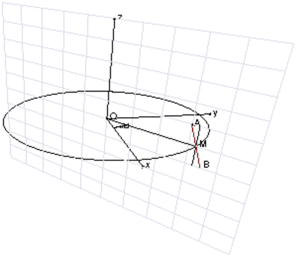
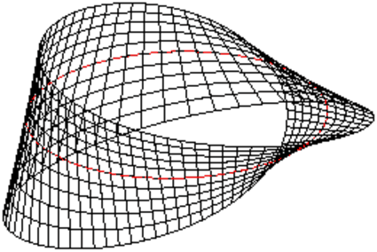
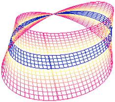
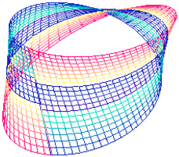

L’équation cartésienne d’un plan quelconque est :
ax+by+cz+d=0 : son vecteur normal est [a,b,c] et il passe par le point
[−d/a,0,0] si a≠ 0 ou par le point [0,−d/b,0] si b≠ 0 ou par le
point [0,0,−d/c] si c≠ 0 (on suppose a*b*c ≠ 0).
Avec Xcas
On tape pour dessiner le plan d’équation 2x+y−2z−1=0 :
plan(2*x+y-2*z-1=0)
L’équation cartésienne d’un plan passant par les points A=[x0,y0,z0],
B=[x1,y1,z1], C=[x2,y2,z2] est :
det([[x0,y0,z0,1],[x1,y1,z1,1],[x2,y2,z2,1],[x,y,z,1]])=0.
Par exemple le plan d’équation x/a+y/b+z/c=1 passe par les points :
A=[a,0,0],B=[0,b,0] et C=[0,0,c] (on suppose a ≠ 0 b ≠ 0 et
c ≠ 0).
Avec Xcas
On définit 3 points A,B,C.
On tape pour dessiner la plan passant par ces 3 points :
plan(A,B,C)
On tape pour avoir son équation cartésienne :
equation(plan(A,B,C))
L’équation cartésienne d’un plan passant par le point A=[x0,y0,z0] et
parallèle aux vecteurs U=[a,b,c] et V=[d,e,f] est :
h*(x−x0)+k*(y−y0)+l*(z−z0)=0 avec [h,k,l]=W=U∧ V=cross(U,V).
L’équation paramétrique d’un plan passant par le point A=[x0,y0,z0] et
parallèle aux vecteurs U=[a,b,c] et V=[d,e,f] est :
x(t)=x0+a+d,
y(t)=y0+b+e,
y(t)=y0+c+f,
(on suppose a*b*c ≠ 0 et d*e*f ≠ 0).
La sphère de centre A=[x0,y0,z0] et de rayon R a pour équation
cartésienne :
(x−x0)2+(y−y0)2+(z−z0)2=R2.
De façon générale, une sphère de centre A=[a,b,c]
est l’ensemble des points M=[x,y,z]
qui vérifient une équation de la forme :
x2+y2+z2−2ax−2by−2cz+d=0
L’équation paramétrique d’une sphère de centre A=[x0,y0,z0] et de
rayon R est :
x=x0+Rcos(θ)cos(λ),
y=y0+Rsin(θ)cos(λ),
z=z0+Rsin(λ)
Avec Xcas
On tape dans un écran de géométrie 3D:
A:=point(1,0,1)
S:=sphere(A,2)
equation(S)
Ou on tape :
sphere(x^2+y^2+z^2-2*x-2*z-2=0)
L’équation cartésienne d’un ellipsoïde centrée en
A=[x0,y0,z0]
et de demi-axes de longueur |a|, |b| et |c| est :
(x−x0)2/a2+(y−y0)2/b2+(z−z0)2/c2=1
L’équation cartésienne d’une hyperboloïde centrée en
A=[x0,y0,z0]
et de demi-axes de longueur |a|,|b| et |c| est :
(x−x0)2/a2+(y−y0)2/b2−(z−z0)2/c2=1
L’équation cartésienne d’une hyperboloïde centrée en
A=[x0,y0,z0]
et de demi-axes de longueur |a|,|b| et |c| est :
(x−x0)2/a2+(y−y0)2/b2−(z−z0)2/c2=−1
L’équation cartésienne d’un paraboloïde elliptique
centrée en
A=[x0,y0,z0]
et de demi-axes de longueur |a|, |b| et |c| est :
(x−x0)2/a2+(y−y0)2/b2−(z−z0)/c=0
L’équation cartésienne d’un paraboloïde hyperbolique
centrée en
A=[x0,y0,z0]
et de demi-axes de longueur |a|, |b| et |c| est :
(x−x0)2/a2−(y−y0)2/b2−(z−z0)/c=0
On cherche tout d’abord l’équation paramétrique du ruban de Mœbius

Pour cela on considère :
Lorsque u varie de 0 à 2π le segment BA engendre le ruban de Moebius
(ou la bande de Moebius) car le point M revient à son point de départ, le
point A se trouve en B et le point B se trouve en A.
On a :
OM=[Rcos(u),Rsin(u),0]
n=cos(u),sin(u),0] est le vecteur normal au cercle
MA=l cos(u/2+π/2)n+lsin(u/2+π/2)k=−lsin(u/2)n+lcos(u/2)k
donc
MA=[−lsin(u/2)cos(u),−l sin(u/2)sin(u),l*cos(u/2)]
Lorsque N se trouve sur le segment AB on a :
MN=v*MA pour v=−1..+1 donc
ON=OM+MN=OM+v*MA
ON=[Rcos(u),R sin(u),0]−v[l sin(u/2)cos(u),−l sin(u/2)sin(u),l cos(u/2)]
donc
ON=[Rcos(u)−lvsin(u/2)cos(u),R sin(u)−lv sin(u/2)sin(u),lv cos(u/2)]
Avec Xcas, on tape :
f(u,v,R,l):=R*cos(u)-l*v*cos(u)*sin(u/2)
g(u,v,R,l):=R*sin(u)-l*v*sin(u)*sin(u/2)
h(u,v,l):=l*v*cos(u/2)
On ouvre un écran de géométrie 3d et on tape :
plotparam([f(u,v,4,1),g(u,v,4,1),h(u,v,1)],[u=0..2*pi, v=-1..1], ustep=0.1,vstep=0.2)
affichage(cercle(point(4,0,0),point(-4,0,0),point(0,4,0)),1)
On obtient :

Ou bien pour avoir dela couleur, on tape dans un éditeur de programmes:
mobcolor():={
local L,j;
L:=NULL;
pour j de 0 jusque 9 faire
L:=L,affichage(plotparam([f(u,v,4,1),g(u,v,4,1),h(u,v,1)],
[u=0..2*pi, v=-1+j*0.1..-1+0.1*j+0.1], ustep=0.1,vstep=0.1),
168+j);
L:=L,affichage(plotparam([f(u,v,4,1),g(u,v,4,1),h(u,v,1)],
[u=0..2*pi, v=1-j*0.1-0.1..1-j*0.1], ustep=0.1,vstep=0.1),
168+j);
//pour le second dessin
//168+j+9);
fpour;
retourne L;
}:;
Puis on ouvre un écran de géométrie 3d et on tape :
mobcolor()
On obtient :
 
On veut trouver les intersections du cube avec un plan passant par les milieux
de ses côtés.
Soient A,B,C,D,E,F,G,H les sommets du cube (ABCD et EFGH sont deux faces
parallèles du cube et AE en est un côté), M le milieu de AB, et N
le milieu de AD.
On cherche l’intersection du cube avec le plan MNP avec P le milieu de
l’un des 10 autres côtés.
Au cube on associe le repère orthonormé
AM,AN,AE/2
Ici la solution est évidente car P se trouve dans le plan ABCD.
L’intersection du cube avec le plan MNP est donc le carré ABCD
Le plan MNP a pour équation z=0
On note P0 le milieu de BC et P1 le milieu de DC.
Les trois segments MN, MP, NP se trouvent chacun sur une des faces du
cube.
L’intersection du cube avec le plan MNP est donc le triangle MNP.
Le plan MNP a pour équation x+y+z=1.
On note P2 le milieu de AE.
Si P3 est le milieu de EF et si P4 est le milieu de EH, les segments
MP3 et NP4 sont parallèles, donc M,N,P3,P4 sont dans le même plan.
Les segments MP3 et NP4 se trouvent chacun sur une des faces du
cube et dans le plan MNP3P4.
Donc, le plan MNP3 (resp MNP4) contient P4 (resp P3) et coupe le
cube selon le rectangle MP3P4N.
Le plan MNP a pour équation x+y=1.
Si P5 est le milieu de BF, si P6 est le milieu de FG, si P7 est le
milieu de GH et si P8 est le milieu de DH, les segments P5P8, P6P7
BD et MN sont parallèles. Le milieu de P5P8 est le centre du cube et
c’est aussi le milieu de MP7 et de NP6. Donc N,M,P5,P6,P7,P8 sont dans
un même plan.
L’intersection du cube avec le plan MNP est donc l’hexagone NMP5P6P7P8.
Le plan MNP a pour équation x+y−z=1.
Si MN coupe BC en I et DC en J.
PI coupe BF en Q et PJ coupe DH en R.
On a BQ=BF/6 et DR=DH/6.
Les segments MN,MQ,QP,PR,RN se trouvent chacun sur une des faces du
cube et dans le plan MNP.
L’intersection du cube avec le plan MNP est donc le pentagone NMQPR.
Le plan MNP a pour équation x+y−3z=1.
On note P9 le milieu de CG.
On peut se servir du bouton du milieu de la souris pour modifier les unités
de l’axe des z.
On tape :
A:=point(0,0,0); B:=point(2,0,0); C:=point(2,2,0); E:=point(0,0,2); M:=point(1,0,0); N:=point(0,1,0); P0:=point(2,1,0); P1:=point(1,2,0); P2:=point(0,0,1); P3:=point(1,0,2); P4:=point(0,1,2); P5:=point(2,0,1); P6:=point(2,1,2); P7:=point(1,2,2); P8:=point(0,2,1); P9:=point(2,2,1); cube(A,B,C); polygone(N,M,P5,P6,P7,P8); plan(M,N,P0); plan(M,N,P2); plan(M,N,P3); equation(plan(M,N,P5)); equation(plan(M,N,P9));
On peut aussi visualiser tous les résultats précédents.
Si vous voulez voir même les lignes cachées il faut décocher
hidden3d dans la configuration du graphique.
Soient A=(1,0,0), B=(0,1,0) et C=(0,0,1) trois points de ℝ3.
1/ Déterminer l’équation du plan P passant par A,B,C. Donner un vecteur normal au plan P.
2/ Soit D0 la droite perpendiculaire à P passant par l’origine.
Déterminer une équation paramétrique de D0.
Calculer les coordonnées du point J intersection de P et D0.
3/ Déterminer les équations paramétriques de la droite D1 passant par
A et J et de la droite D2 passant par B et C.
Montrer que D1 et D2 se coupent au milieu M de BC. On precisera les
coordonnées de M.
1/ L’équation du plan P est de la forme :ax+by+cz+d=0.
P passe par A donc : a+d=0
P passe par B donc : b+d=0
P passe par C donc : c+d=0
donc a=b=c=−d et une équation du plan P est x+y+z=1.
Un vecteur normal au plan P est donc (a,b,c)=(1,1,1).
Ou encore on a :
n=AB∧AC
On a :
AB=(−1,1,0) et AC=(−1,0,1)
On tape :
cross([-1,1,0],[-1,0,1])
On obtient un vecteur normal n au plan P :
[1,1,1]
Si M=(x,y,z) est un point du plan P, l’équation du plan P est :
n · AM=0.
On tape :
dot([1,1,1],[x-1,y,z])=0
On obtient une équation du plan P :
(x-1+y+z)=0
2/ Si M=(x,y,z) est un point de D0, OM est parallèle
à n donc :
OM=λ · n
avec λ ∈ ℝ.
Ou on tape :
cross([x,y,z],[1,1,1])=[0,0,0]
On obtient :
[y-z,z-x,x-y]=[0,0,0]
L’équation de D0 est donc :
x=y=z ou encore :
x=λ,y=λ,z=λ avec λ ∈ ℝ.
Pour obtenir l’intersection de P et D0, on tape :
solve([y-z,z-x,x-y,x-1+y+z],[x,y,z])
On obtient les coordonnées de J :
[[1/3,1/3,1/3]]
3/ Pour obtenir l’équation de D1 on a :
AM=λ ·AJ donc :
[x−1=(−2)/3,y=λ/3,z=λ/3]
Ou on tape :
cross([x-1,y,z],[-2/3,1/3,1/3])=[0,0,0]
On obtient :
[y/3-z/3,(z*-2)/3-(x-1)/3,(x-1)/3-(y*-2)/3]=[0,0,0]
On tape :
solve([y/3-z/3,(z*-2)/3-(x-1)/3,(x-1)/3-(y*-2)/3],[x,y,z])
et on obtient : [[x,(x-1)/-2,(x-1)/-2]]
donc x=x,y=(x-1)/-2,z=(x-1)/-2 est l’équation paramétrique de D1
de paramètre x.
Pour obtenir l’équation de D2 on a :
BM=λ ·BC donc :
x=0, y−1=−λ, z=λ
Ou on tape :
cross([x,y-1,z],[0,-1,1])=[0,0,0]
On obtient :
[y-1+z,-x,-x]=[0,0,0]
donc x=0, y=y, z=1-y est l’équation paramétrique de D2 de
paramètre y.
Pour avoir l’intersection de D1 et de D2, on tape :
solve([ x=x,y=(x-1)/-2,z=(x-1)/-2, x=0,y=y,z=1-y],[x,y,z])
On obtient les coordonnées de M :
[[0,1/2,1/2]]
Ce point est bien le milieu de BC puisque :
2*OM=OB+OC.
Ce problème aète donné aux olympiades académiques de 2005.
Quatre cônes opaques sont posés sur le sol.
Les trois cônes K1,K2,K3 sont identiques : leur hauteur est égale au
rayon r de leurs cercles de base et les centres de ces cercles sont les
sommets d’un triangle équilatèral de côté 1.
Le cône K4 a une hauteur égale au diamètre de son cercle de base et
celui-ci est tangent extérieurement aux cercles de base des trois autres
cônes.
Quelle condition doit vérifier r pour que, depuis le sommet de chacun des
quatre cônes, les trois autres sommets soient visibles ?
Pour tracer on cône, ayant un sommet et une base , il faut utiliser la
commande demi_cone de Xcas qui a comme patramètres :
son sommet, la direction de son axe, son demi-angle au sommet et,
sa hauteur algégrique.
Le rayon des cercles de base des cônes K1,K2,K3 vaut r avec
0 ≤ r≤ 0.5.
Le rayon du cercle de base du cône K4 vaut R=√3/3−r, et son
demi-angle au sommet a pour tangente 1/2.
On appelle A,B,C,D les sommets des cônes K1,K2,K3,K4.
On tape ou on exécute cones.xws :
r:=element(0 .. 0.5,0.19); A:=point([0,0,r]):; B:=point(1,0,r):; C:=point(1/2,sqrt(3)/2,r):; demi_cone(A,[0,0,1],pi/4,-r); demi_cone(B,[0,0,1],pi/4,-r); demi_cone(C,[0,0,1],pi/4,-r); R:=sqrt(3)/3-r; D:=point(1/2,sqrt(3)/6,2*R):; K4:=affichage(demi_cone(D,[0,0,1],atan(0.5),-2*R),rempli+bleu); segment(A,B,couleur=rouge); segment(C,B,couleur=rouge); segment(C,A,couleur=rouge); affichage(inter(plan(A,B,C),K4),vert); evalf(sqrt(3)/9);
On peut faire varier r et voir qu’il faut choisir r>a avec a≃ 0.2.
Le cas limite étant que les segments AB, BC et AC doivent être
tangent au cercle C4 qui est l’intersection du cône K4 et du plan
ABC.
Il est interessant de regarder la vue de dessus (Menu->3-d) pour voir comment évolue l’intersection du cône K4 avec le plan ABC.
Il est évident que depuis D on peut toujours voir les points A,B,C et
inversement d’un des points A,B,C on peut toujours voir le point D.
Pour que l’on puisse voir B et C depuis le point A il ne faut pas que le
cercle C4, intersection du cône K4 avec le plan ABC coupe les
segments AB et AC. Pour que l’on puisse voir C depuis le point B il ne
faut pas que le cercle C4 coupe le segments BC.
IL faut donc chercher l’intersection C4, du cône K4 avec le plan ABC,
à savoir son centre et son rayon. Son centre a pour coordonnées
1/2,√3/6,r.
Si son rayon vaut r1, on sait que la hauteur du cône K4 vaut 2*R et
Comme le demi-angle au sommet du cône K4
a pour tangente 1/2, la distance du centre de C4 au sommet de K4 est
égale au double du rayon du cercle C4 donc :
2*R=r+2*r1 or R=√3/3−r donc :
2*R=2*√3/3−2*r=r+2*r1
r1=√3/3−3*r/2.
Pour tracer ce cercle en vert il faut taper :
r1:=sqrt(3)/3-3*r/2
affichage(cercle([1/2,sqrt(3)/6,r],[r1,0,0],A),vert)
Lorsque ce cercle est tangent aux segments AB,
BC et AC il est facile de trouver son rayon car c’est donc le cercle
inscrit au triangle ABC. Comme le
triangle ABC est équilatéral, son rayon vaut √3/6.
donc 2*R=r+√3/3
0n a donc, le cercle C4 est tangent aux segments AB, BC et AC :
r1=√3/3−3*r=√3/6,
c’est à dire :
r=√3/9=a et evalf(sqrt(3)/9)=0.19245008973.
Si r<a chaque segment AB, BC et AC coupent le cône K4 en 2 points
et si r ≥ a les segments sont tangents ou extérieurs au cône K4.